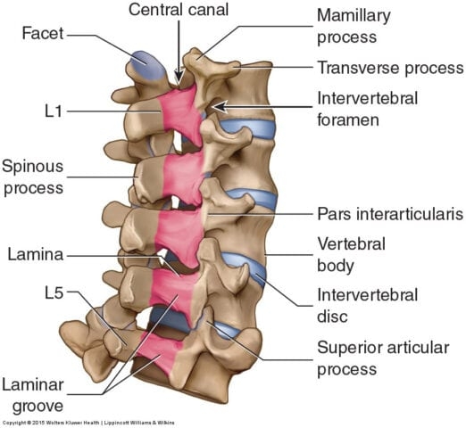
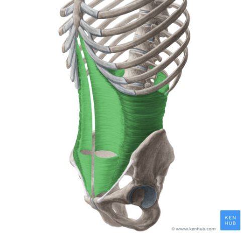
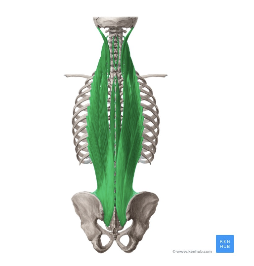
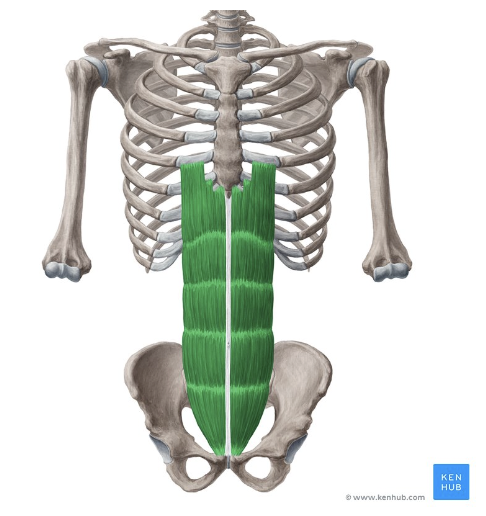
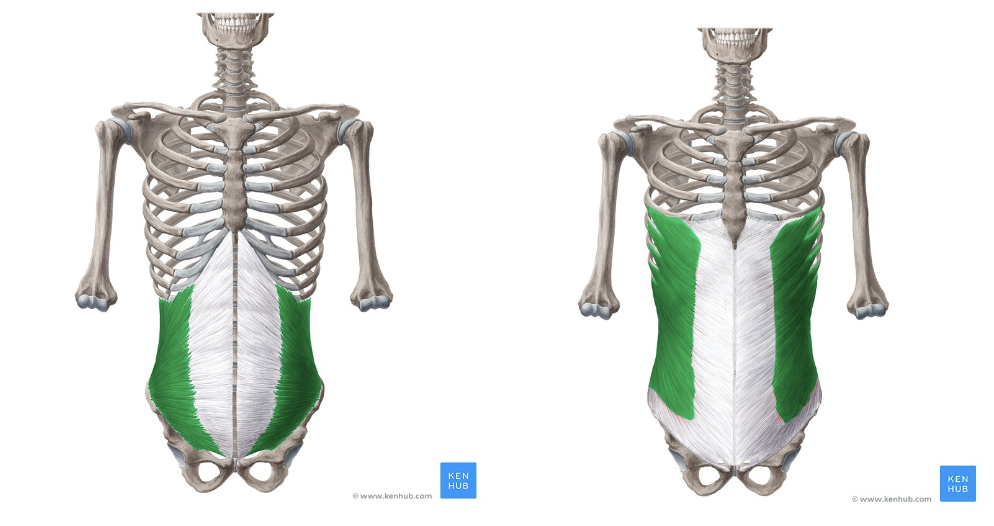
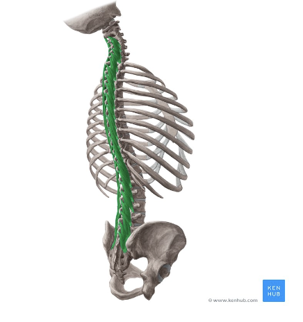
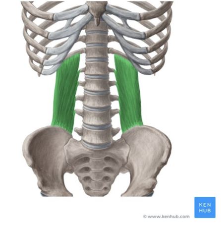
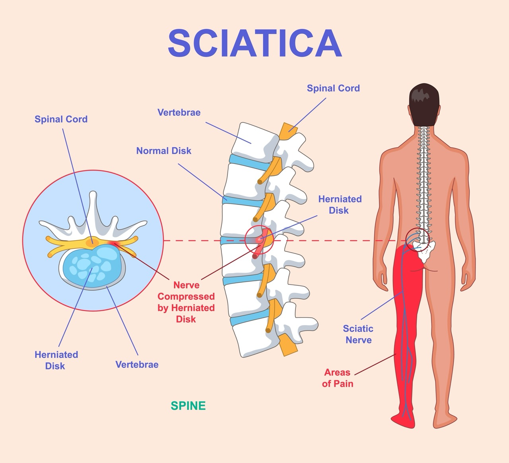

Lower Back Pain
Learn how the lumbar spine works, which muscles stabilise it, and exactly why each exercise helps your recovery.
Anatomy of the Lower Back
The lower back — or lumbar spine — is the foundation of almost every movement your body makes. It connects the upper body to the lower body, bears the weight of your torso, and must simultaneously allow movement and maintain stability. When it breaks down, it affects nearly everything.
The lumbar spine consists of five vertebrae, labelled L1 through L5. These are the largest bones in the entire spinal column, and for good reason — their primary job is weight bearing. They support the torso above them and protect the cauda equina — the bundle of nerve roots that branch off below the end of the spinal cord and travel down into the legs. The spinal cord itself terminates at around the L1–L2 level; below that, only the cauda equina nerve roots continue through the lumbar canal.

Key Muscles
-

Transverse Abdominis — The deepest layer of abdominal muscle, wrapping around the trunk like a natural weightlifting belt. It creates intra-abdominal pressure that stiffens and supports the spine during everyday movement and heavy lifting. Often described as the body's built-in back brace. -

Multifidus — A series of small but powerful muscles running along either side of the spine. Rather than moving the spine, their job is to stabilise it — ensuring each individual vertebra stays in the correct position during movement. The multifidus is frequently inhibited in people with chronic lower back pain, and restoring its function is central to recovery. -

Rectus Abdominis — The long vertical muscle running down the front of the abdomen. It supports posture and contributes to intra-abdominal pressure, helping to manage the load placed on the lumbar spine. -

Obliques — The external and internal obliques run diagonally across the sides of the abdomen, forming a cross-hatched layer of support. They control rotation and lateral flexion of the trunk, and work alongside the transverse abdominis to generate the intra-abdominal pressure that stabilises the lumbar spine during movement. -

Erector Spinae — A group of three muscles (iliocostalis, longissimus, and spinalis) running the full length of the spine. They extend and laterally flex the vertebral column, and are the primary muscles responsible for keeping the trunk upright against gravity. Weakness here is a common driver of postural lower back pain. -

Quadratus Lumborum (QL) — A deep, flat muscle connecting the pelvis to the lowest rib and the lumbar vertebrae. It stabilises the lumbar spine and pelvis during walking and lifting, and is one of the most frequently involved muscles in acute lower back pain — often felt as a sharp, deep ache in the flanks or lower back. -
Hip Flexors (Psoas & Iliacus) — The psoas originates directly from the lumbar vertebrae and travels forward through the pelvis to the femur; the iliacus runs alongside it from the inner surface of the pelvis. Together they are the primary hip flexors. When chronically tight — as is common with prolonged sitting — they pull the lumbar spine into excessive lordosis by anteriorly tilting the pelvis, increasing pressure on the facet joints and intervertebral discs. Tight hip flexors are a clinically significant but frequently overlooked contributor to lower back pain.
Nerve Compression and Sciatica
The cauda equina nerve roots pass through and around the lower five vertebrae on their way down into the legs. When a spinal disc bulges outward, or when a vertebra shifts out of its correct position, it can compress these nerves. Depending on which nerve is affected, this produces a distinctive and often debilitating sensation: either a deep, burning ache or sharp electric shocks typically travelling down one leg. This is known as sciatica.
The piriformis — a small, deep muscle in the buttock that lies in close proximity to the sciatic nerve — can also compress the nerve when tight or inflamed, producing symptoms that closely mimic disc-related sciatica. This is known as piriformis syndrome. Because its presentation is so similar to true disc pathology, distinguishing between the two is one reason a professional assessment is valuable before beginning any rehab programme.

From Anatomy to Exercise
The following exercises have been selected because they directly target the core muscles and structures identified above. Rather than generic strengthening, each movement trains the specific muscles — the multifidus, the transverse abdominis, the hip flexors, and the surrounding stabilisers — that are most responsible for lumbar health. Each exercise is explained with the specific anatomy in mind, so you understand not just what to do, but why it works for your lower back.
Rehab Exercises
Phase 1 — Acute
Restore gentle spinal mobility and relieve pain. Perform daily. Stop any exercise that increases leg pain or neurological symptoms.
Phase 2 — Strength
Rebuild deep core stability and posterior chain strength. Advance here once daily movement is pain-free and Phase 1 exercises are comfortable.
Phase 3 — Functional
Integrate stability under dynamic load and return to normal activity. Advance here once Phase 2 exercises feel controlled and consistent.
Cat Cow Stretch

Start on all fours with hands directly under your shoulders and knees under your hips. Inhale and drop the belly toward the floor, lifting the head and tailbone (cow position). Exhale and round the spine toward the ceiling, tucking the chin and pelvis (cat position). Move slowly and steadily between the two.
Dosage: 2–3 sets of 8–10 slow cycles. Perform daily, ideally as a morning mobility routine.
Moves the lumbar spine through its full range of flexion and extension, improving mobility and relieving muscular tension along the vertebrae. Importantly, it activates the multifidus — which is frequently inhibited in people with chronic lower back pain — and helps restore normal movement patterns across the lumbar vertebrae.
Pairs well with Knee to Chest — together they form a gentle mobility sequence that both mobilises and decompresses the lumbar vertebrae before progressing to any strengthening work.
Knee to Chest

Lie on your back. Bring one or both knees gently toward your chest and hold for 20 to 30 seconds. Breathe steadily and allow the lower back to relax into the floor.
Dosage: Hold 20–30 seconds per side, 2–3 repetitions. Perform daily, particularly when symptoms are at their most acute.
Gently creates space between the lumbar vertebrae, decompressing the spine and relieving pressure on the cauda equina nerve roots. This directly addresses sciatic pain caused by nerve compression. The stretch also targets the glutes and lower back musculature simultaneously, reducing the tension that pulls on the lumbar vertebrae.
Pairs well with Cat Cow Stretch — combining spinal mobilisation with targeted decompression creates a complete gentle routine for managing acute lumbar pain or preparing the spine for loading.
Hip Flexor Stretch

Kneel on one knee with the opposite foot forward in a lunge position. Keeping your torso upright, gently press your hips forward until you feel a stretch through the front of the rear hip and thigh. Hold, then switch sides.
Dosage: Hold 30–45 seconds each side, 2–3 repetitions. Perform daily, particularly if you sit for extended periods.
Directly lengthens the psoas and iliacus — the hip flexors that attach directly to the lumbar vertebrae. When chronically shortened, these muscles anteriorly tilt the pelvis and pull the lumbar spine into excessive lordosis, compressing the facet joints and discs. Restoring hip flexor length reduces this postural loading and is one of the most targeted interventions for lumbar pain in people who sit for prolonged periods.
Pairs well with Bridges — while this stretch lengthens the hip flexors, the bridge activates the antagonist glutes; together they address the anterior pelvic tilt pattern that drives a significant proportion of lower back pain.
Bridges

Lie on your back with knees bent and feet flat on the floor. Drive the hips upward by squeezing the glutes, hold briefly at the top, then lower slowly. Can be progressed to a single-leg variation once the double-leg version is comfortable.
Dosage: 3 sets of 12–15 reps. Perform 4–5 times per week. Progress to single-leg once comfortable.
Strengthens the glutes and activates hip extension, which directly reduces the load placed on the lumbar spine during movement. As a secondary effect, the movement also activates the multifidus and transverse abdominis as stabilisers — meaning it trains three of the most critical muscles for lumbar health in a single exercise.
Pairs well with Bird Dog — the bridge trains hip extension and posterior chain activation, while the bird dog trains anti-rotation stability; together they address the two core demands on a healthy lumbar spine.
Bird Dog

Start on all fours. Extend the opposite arm and leg simultaneously, keeping the spine completely neutral and the hips level throughout. Hold briefly, return to the start, then repeat on the other side.
Dosage: 3 sets of 8–10 reps each side. Perform 4–5 times per week. Increase the hold duration to progress.
Trains the multifidus and transverse abdominis to actively stabilise the lumbar spine while the limbs create shifting load and movement — mirroring the demands placed on the spine during everyday activities like walking, reaching, and lifting. This is one of the most evidence-supported exercises for lower back rehabilitation.
Pairs well with Bridges and Dead Bug — the bridge builds the posterior chain strength the bird dog demands, while the dead bug trains the anterior core to complete balanced spinal stability.
Dead Bug

Lie on your back with arms pointing toward the ceiling and knees bent at 90 degrees in the air. Slowly lower the opposite arm and leg toward the floor while keeping the lower back pressed firmly flat against the ground. Return to the start and repeat on the other side.
Dosage: 3 sets of 8–10 reps each side. Perform 3–4 times per week. Slow the movement speed to increase difficulty.
Trains the transverse abdominis and deep core muscles to maintain spinal stability as the limbs create load — teaching the nervous system to protect the lumbar spine automatically. The requirement to keep the lower back flat throughout is what makes the exercise so effective: it ensures the core is doing the stabilising work rather than the spine itself.
Pairs well with Bird Dog — while the bird dog trains the back extensors and posterior stabilisers, the dead bug targets the anterior core; together they provide complete, balanced spinal stability from both sides of the spine.